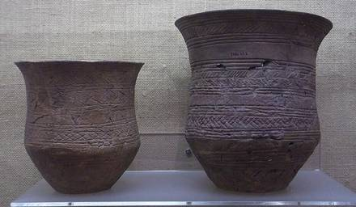
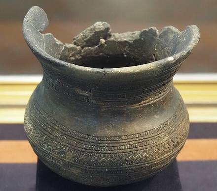

It depends on when you ask. DNA from ancient skeletons shows that the people living in Britain changed again and again.
About 10,000 years ago, a man was buried in a cave in southwest England. Archaeologists call him Cheddar Man. His people were hunter-gatherers.
Over the next 8,000 years, how many times did newcomers replace about half or more of Britain’s ancestry?
Watch Britain change
Newcomers arrive by boat. Once they land, they become tiles in Britain’s gene pool. Each tile stands for 1% of the ancestry of everyone living there, not 1% of the people.

Found in burials in Dorset, England

Found in a burial at Fuente-Olmedo, Spain
Bell Beaker pots are named for their shape, like an upside-down bell. The style spread across western and central Europe starting around 2750 BCE.
Photos: Pasicles (left) and Laci3 (right), Wikimedia Commons, public domain.
What their DNA shows
Each bar below shows the share of people tested whose DNA carried that variant.
What’s a gene variant?
Genes are instructions in our DNA, and many come in slightly different versions, called variants. A few variants are linked to how people look. Someone with two copies of the blue-eye variant (one from each parent) usually has blue or other light eyes. Someone with neither of the two light-skin variants usually has darker skin, though skin color depends on many genes.
What this can’t show
Tiles aren’t people. Each tile is 1% of the ancestry of everyone living in Britain, not any one person’s. Newcomers and the people already there had children together, so most people carried ancestry from both. When a color nearly disappears, the newcomers’ descendants came to far outnumber the earlier population’s; it doesn’t mean no one mixed.
Why earlier groups shrank. DNA shows whose descendants lived in Britain later. It can’t say whether earlier people were outnumbered, had fewer surviving children, died of disease, or were driven out. Archaeologists warn against assuming invasions.
Newcomers were mixed too. The first farmers’ ancestors had already mixed with hunter-gatherers on the continent, so their tiles carry some hunter-gatherer ancestry. What largely disappeared was ancestry from Britain’s own earlier hunter-gatherers.
Britain wasn’t uniform. The third arrival is measured in England and Wales. The same shift doesn’t show up in Scotland. All of these numbers are estimates from the remains of about 600 people who lived in Britain before the Romans arrived.
What people looked like. The bars count gene variants in the people whose remains have been dug up and tested, a few dozen to a few hundred per period. A variant isn’t a guarantee that a person looks a specific way; skin color depends on many genes.
Things to ponder
Look at the DNA bars. The gene variants linked to blue eyes, light skin, and milk digestion each arrived and began to spread at a different time. What does that suggest about sorting people into races based on traits?
“Replaced” can sound violent, but DNA can’t tell us why earlier groups left fewer descendants. What other explanations can you think of? What evidence would help you decide?
Sources
Brace, Selina, et al. 2019. “Ancient Genomes Indicate Population Replacement in Early Neolithic Britain.” Nature Ecology & Evolution 3(5):765–771. https://doi.org/10.1038/s41559-019-0871-9
Furholt, Martin. 2018. “Massive Migrations? The Impact of Recent aDNA Studies on Our View of Third Millennium Europe.” European Journal of Archaeology 21(2):159–191. https://doi.org/10.1017/eaa.2017.43
Gretzinger, Joscha, et al. 2022. “The Anglo-Saxon Migration and the Formation of the Early English Gene Pool.” Nature 610(7930):112–119. https://doi.org/10.1038/s41586-022-05247-2
Mallick, Swapan, et al. 2024. “The Allen Ancient DNA Resource (AADR): A Curated Compendium of Ancient Human Genomes.” Scientific Data 11(1):182. https://doi.org/10.1038/s41597-024-03031-7
Mallick, Swapan and David Reich. 2026. “The Allen Ancient DNA Resource (AADR): A Curated Compendium of Ancient Human Genomes.” Version 66.p1 (released June 8, 2026). Harvard Dataverse. https://doi.org/10.7910/DVN/FFIDCW
Olalde, Iñigo, et al. 2018. “The Beaker Phenomenon and the Genomic Transformation of Northwest Europe.” Nature 555(7695):190–196. https://doi.org/10.1038/nature25738
Patterson, Nick, et al. 2022. “Large-Scale Migration into Britain during the Middle to Late Bronze Age.” Nature 601(7894):588–594. https://doi.org/10.1038/s41586-021-04287-4
How the numbers were made: the crowd follows three published estimates. Farmers replaced nearly all earlier ancestry in Britain (Brace et al. 2019). Beaker-era newcomers replaced about 90% (Olalde et al. 2018). Bronze Age newcomers contributed about half the ancestry of Iron Age England and Wales (Patterson et al. 2022); the page splits the other half between the earlier groups in the same 9-to-1 proportion. The bars were calculated for this page from the AADR’s 1240K data set: people buried in the United Kingdom with a date and a passing quality rating, each counted once. A variant’s percentage is the share of tested people whose sampled DNA read carried it. The variants are rs1426654 (SLC24A5) and rs16891982 (SLC45A2) for light skin, rs12913832 (HERC2, blue eyes), and rs4988235 (LCT, milk digestion). One check against a published result: the LCT variant in Iron Age Britain is 49% here and about 50% in Patterson et al. 2022. Cheddar Man’s variants match the dark skin and blue or green eyes reported by Brace et al. 2019.
This page aims to meet WCAG 2.1 Level AA, so it works for people who use screen readers, keyboards, or screen magnification.
All buttons and links can be reached and used with a keyboard, and show a visible outline when selected.
The gene pool has a text equivalent: the “Ancestry in Britain” list beside it gives each group’s share at every step.
The DNA bars show their percentages as text.
The boat animation is skipped for anyone whose device is set to reduce motion.
The “Bell Beaker” pop-up opens with a click, a tap, the keyboard, or a mouse hover, and closes with Escape. Its photos have text descriptions.
Each group has its own shape as well as its own color, so color isn’t the only way to tell them apart.
Text meets WCAG AA color contrast standards in both light and dark mode.
The page fits narrow phone screens without sideways scrolling.
I checked it in November 2026 with automated accessibility testing (axe-core) plus keyboard and small-screen checks. It hasn’t yet been tested by people who use screen readers every day, so there may be problems I haven’t caught. If something doesn’t work for you, please let me know (needs a free GitHub account).

.jpg){kind=link}